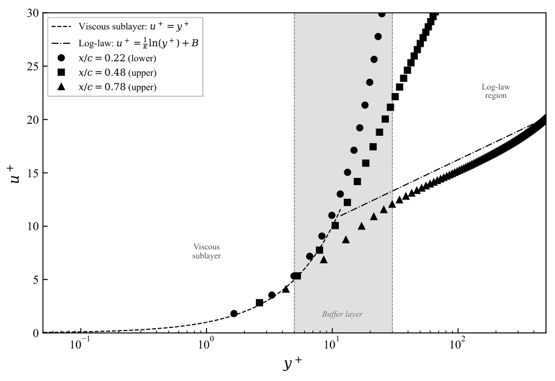
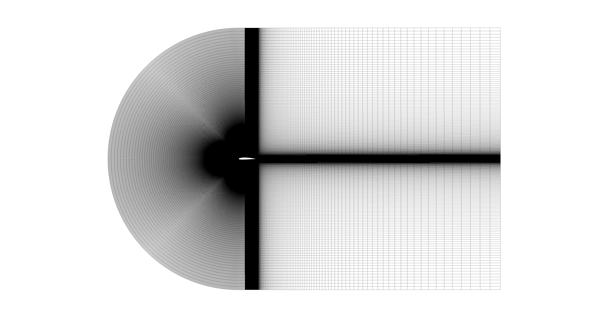
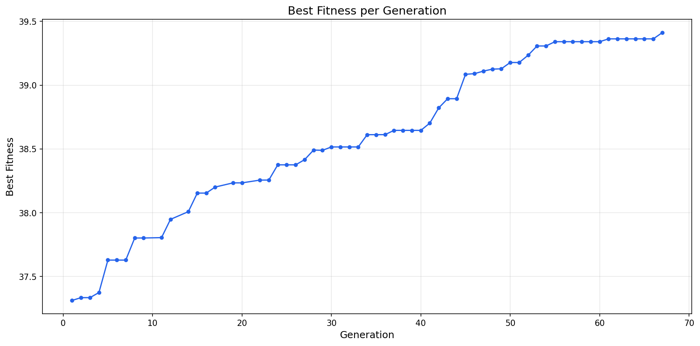
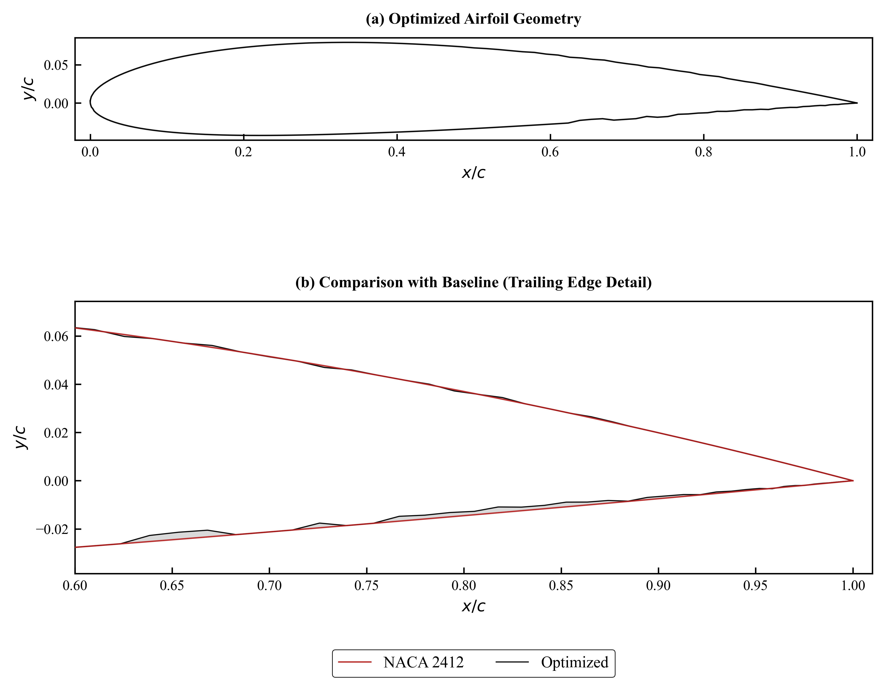
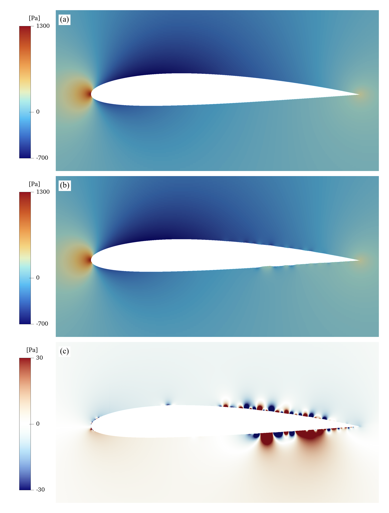
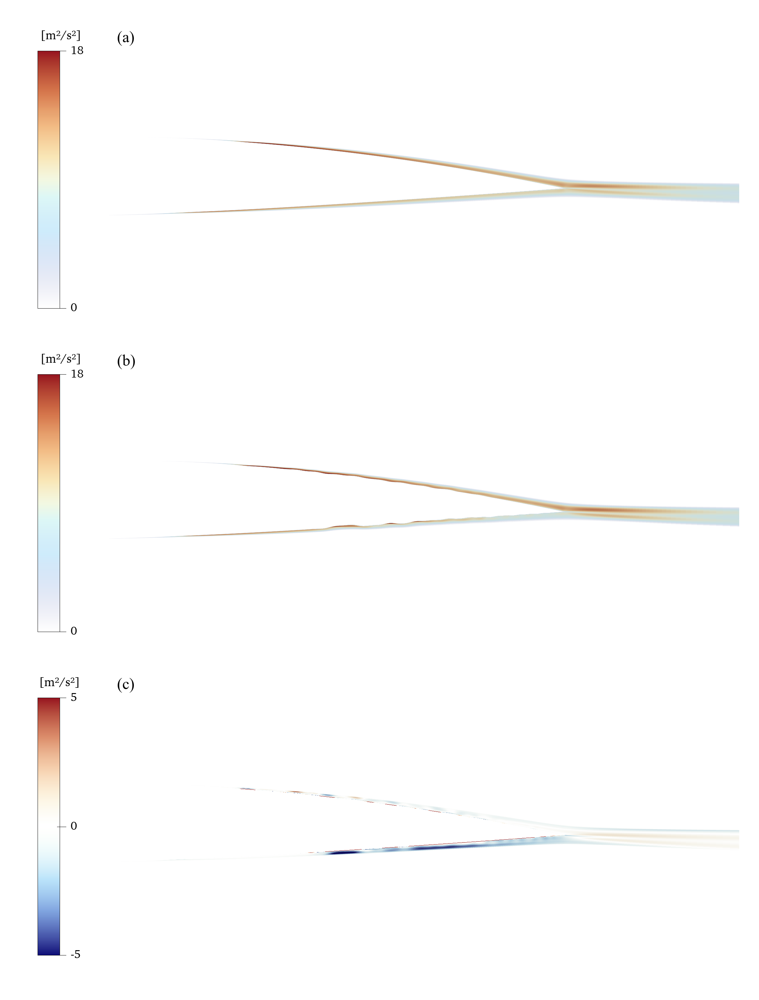
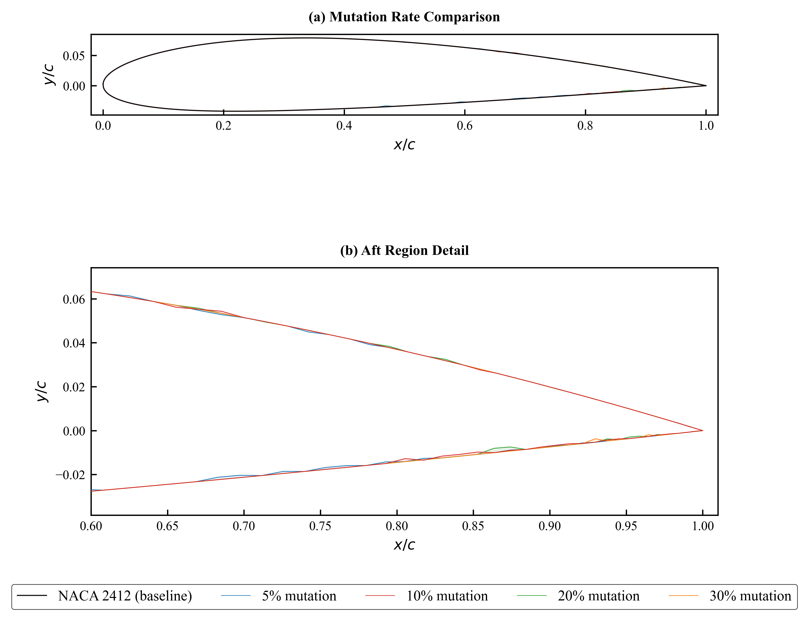
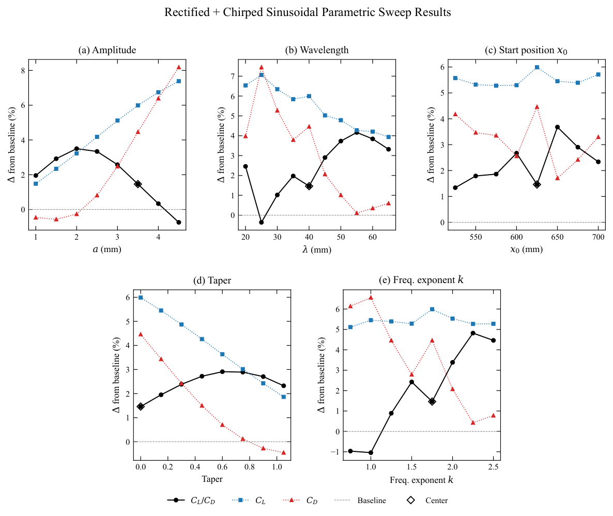

During my time as a Research Assistant in the USF Thermofluids Discovery Laboratory, I contributed to the NASA CLEAN Initiative, a program targeting zero-emission aircraft design. My focus was a specific open question: can 2D airfoil shape optimization serve as a computationally practical method for early-stage wing development?
I built and validated a high-fidelity CFD pipeline in ANSYS Fluent around the NACA 2412, a well-documented airfoil that gave me strong experimental reference data for rigorous model calibration. That validation work — mesh independence studies, turbulence model selection, and parameter tuning against NASA wind tunnel benchmarks — became the methodological backbone of everything that followed. Once I trusted the simulation, I coupled it to a Python genetic algorithm built on PyGAD to search for geometries with improved lift-to-drag ratio.
What came out of that optimization turned into its own investigation. The results were interesting enough, and the validation framework thorough enough, that this work is currently being prepared for first-author submission to an AIAA journal.
CFD Validation
Before running a single optimization, I needed to trust the simulation. That meant building the CFD model from scratch in ANSYS Fluent and validating it against NASA Langley wind tunnel data for the NACA 2412 before coupling it to anything else.
The initial setup used the standard k-omega model, which consistently overpredicted drag. Switching to the SST-Transition model was the right call physically, since it resolves laminar-to-turbulent transition rather than assuming fully turbulent flow from the leading edge. But adopting it wasn’t enough on its own. I ran sensitivity studies on the transition onset coefficient and the intermittency production rate, tuned surface roughness to represent polished wind tunnel conditions, and matched freestream turbulence intensity to the Langley test environment. Each of those choices had a measurable effect on drag prediction, and I traced the dominant error source to delayed transition onset.
The final validated configuration achieved CL/CD error below 7% at the target Reynolds number of 3.1×106. I also ran a mesh independence study across four structured meshes from roughly 400,000 to 1.8 million cells, all wall-resolved with y+ below 2. Predictions varied by less than 0.4% across that range. A second mesh independence study was later conducted on the optimized geometry specifically, to confirm that the performance gains weren’t resolution-dependent artifacts.
Only after all of that did the optimization run on a model I was willing to defend.

Law of the wall profiles at three chordwise stations, confirming wall-resolved boundary layer resolution (y+ < 2)

Final C-grid topology with wall-resolved inflation layers (y+ < 2)
Genetic Algorithm Optimization
A genetic algorithm searches a design space the way evolution searches a gene pool: through selection, crossover, and mutation across successive generations of candidate solutions. Each candidate geometry was meshed and evaluated using the validated CFD pipeline, with lift-to-drag ratio as the sole objective. No surrogates, no smoothness constraints on the geometry.
After 83 generations, the optimized airfoil reached a lift-to-drag ratio of 39.53 against a baseline of 37.31, a 5.94% improvement, driven primarily by a 4.8% increase in lift with a modest drag reduction.
The more interesting result was geometric. Across the optimized geometry, the algorithm had left the leading edge and forward chord essentially untouched and concentrated all its modifications near the trailing edge, introducing small-amplitude oscillations on both surfaces aft of x/c = 0.6. This wasn’t a one-off outcome. It showed up consistently regardless of random seed and mutation rate, which immediately raised the question of whether it was a physical mechanism or a numerical artifact.
That question drove everything that followed.

Best lift-to-drag ratio per generation, showing convergence over 83 generations

Baseline vs. optimized airfoil, with trailing-edge oscillations concentrated aft of x/c = 0.6
Physical Interpretation
The first question after seeing the oscillations was whether the pressure field could explain the lift gain. The static pressure difference contours, optimized minus baseline, gave a clear answer. The trailing edge modifications were generating alternating pockets of localized pressure change along both surfaces, with a net pressure increase on the lower surface and a net decrease on the upper. That’s the lift mechanism. Integrating the chordwise pressure difference confirmed it numerically: +13.71 Pa net contribution from the lower surface, −4.64 Pa from the upper, over the region where the oscillations live.
The turbulent kinetic energy contours added another layer. The optimized geometry showed a systematic reduction in near-wall TKE along the lower surface boundary layer in the aft region, with the effect most pronounced approaching the trailing edge. The oscillations appear to be delaying or weakening separation onset, producing smoother, more attached flow. The upper surface saw a smaller but consistent reduction as well.
Together these two pictures tell a coherent story. The trailing edge geometry is acting somewhat like surface dimples on a golf ball, generating small vortical structures that redistribute circulation, modify pressure recovery, and suppress turbulent mixing in the boundary layer. The lift gain is real, and the physics behind it is traceable.

Static pressure [Pa]: Baseline (top) · Optimized (middle) · Difference (bottom)

Turbulent Kinetic Energy [m2/s2]: Baseline (top) · Optimized (middle) · Difference (bottom)
Robustness and Sensitivity Studies
Finding an interesting result is one thing. Confirming it holds up under scrutiny is another. I ran three categories of follow-up studies specifically to stress-test the optimization outcome.
The first was robustness testing across random seeds and mutation rates. Three independent runs with different initializations all converged to geometries showing the same trailing edge oscillatory behavior, with comparable fitness values despite taking different paths there. Testing mutation rates from 5% to 30% told the same story: the specific convergence trajectories differed but the characteristic aft-region geometry kept emerging. The feature was reproducible, not lucky.
The second was a mesh independence study on the optimized geometry itself, separate from the one run on the baseline during validation. Performance improvement varied by only 0.6% across mesh resolutions, with finer meshes capturing slightly more of the gain, consistent with better resolving the small trailing edge features.
The third was a turbulence model sensitivity check. Re-evaluating both the baseline and optimized geometries under standard k-ω and Spalart–Allmaras models showed reduced absolute improvement percentages, expected since neither captures laminar-to-turbulent transition. But both still predicted improvement. The gain persisted across fundamentally different closure assumptions.
Taken together, these studies made the case that the result was not an artifact of initialization, mesh resolution, or model formulation.

Fitness overlay across independent runs, showing convergence to consistent trailing-edge geometry regardless of initialization
Geometric Characterization and Parametric Sweep
Once the trailing edge oscillations were confirmed as a real aerodynamic feature, the next step was to describe them mathematically. I fit a rectified chirped sinusoidal perturbation function to the GA-optimal lower surface geometry. The equation captures the key physical behavior: one-sided bumps that only displace the surface outward, an amplitude that tapers toward the trailing edge, and a smooth return to zero at the trailing edge regardless of other parameter values. Five free parameters control the shape: amplitude, wavelength, perturbation start position, taper rate, and frequency exponent. The interactive figure at the top of this project lets you manipulate each one directly and watch how the geometry responds, giving an immediate intuition for what each parameter is actually doing to the surface.
With the equation established, I ran a one-at-a-time parametric sweep across all five parameters on the NACA 2412, running roughly 42 CFD evaluations, each solved in ANSYS Fluent at the same operating condition used throughout. The goal was to map how sensitive lift-to-drag ratio was to each parameter independently and locate the single-variable optima. The results reveal which parameters aerodynamic performance responds to most strongly and where the peak improvement sits within each range.
δy = max(0, a · (1 − τξ) · (1 − ξ²) · sin(2π(xte − x0) / λ · ξk))
where ξ = (x − x0) / (xte − x0) is the normalized chordwise coordinate over the perturbation domain, where a: peak outward displacement · λ: spatial period · x0: perturbation start · τ: amplitude taper toward trailing edge · k: frequency chirp exponent.

One-at-a-time parametric sweep showing lift-to-drag sensitivity and single-variable optima across all five perturbation parameters